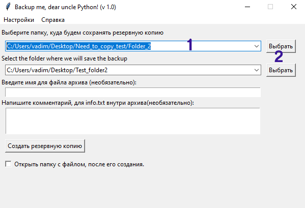

Для создания резервной копии ваших файлов скопируйте путь папки, для которой вы хотите сделать резервную копию, в поле (1) или выберети ее в диалоговом окне, нажав кнопку "Выбрать" (2).

Аналогичным способом выберите директорию, в которую вы хотите сохранить резервную копию.
Нажав на стрелку(3) вы можете увидеть последние использованные директории.
По умолчанию имя файла при сохранении выглядит следущим образов:
19-January-2023_22-32-59, т.е. имеет формат дд-Месяц-гггг_чч-мм-сс
Вы можете написать префикс к имени файла (4), который добавиться к имени архива при создании.

В поле (5) вы можете написать комментарий к резервной копии, который будет сохранен в файле _backup_readme.txt и добавлен в архив с файлами.
При успешном создании архива будет выведено сообщение.
Однако если вы используете недопустимые символы в пути сохранения файла или в префиксе имени, вы увидите сообщение об ошибке. В этом случае, для создания резервной копии проверьте правильность написания префикса файла и пути для его сохранения.

Вы можете так же загрузить свою резервную копию в свое хранилище Google Drive. Для загрузки архива на поставьте галочку в чекбоксе "Загрузить на Google Drive" (6).

При первом запуске приложения вы увидете что опция "Загрузить на Google Drive" недоступна. (7) Для использования этой функции вам необходимо авторизоваться на Google Drive через меню Настройки -> Google Drive. Далее нужно нажать на кнопку "Войти в аккаунт" и следовать инструкции.

После успешной авторизации вы сможете загружать свои резервные копии в свое облачное хранилище Google Drive!
По всем вопросам пишите по адресу vadimmmz@mail.ru